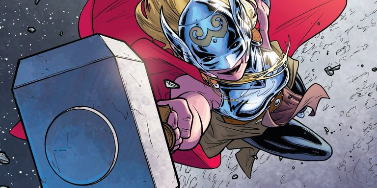
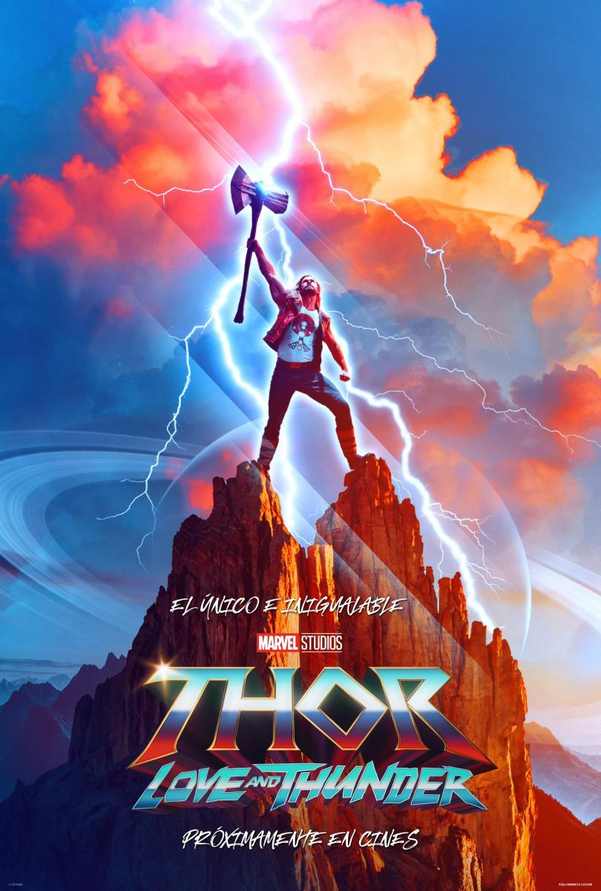
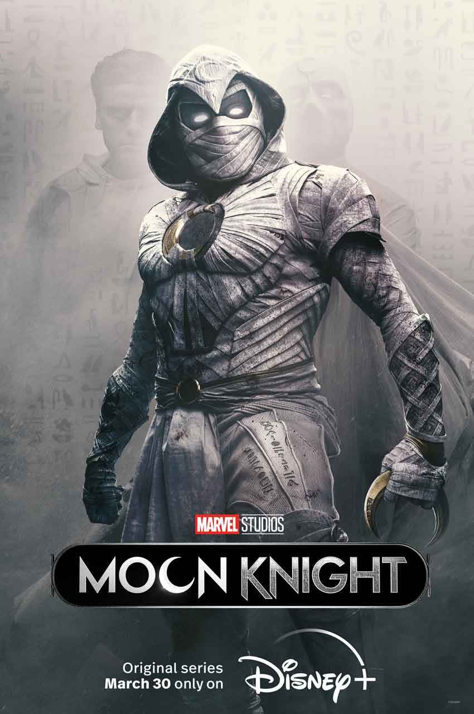
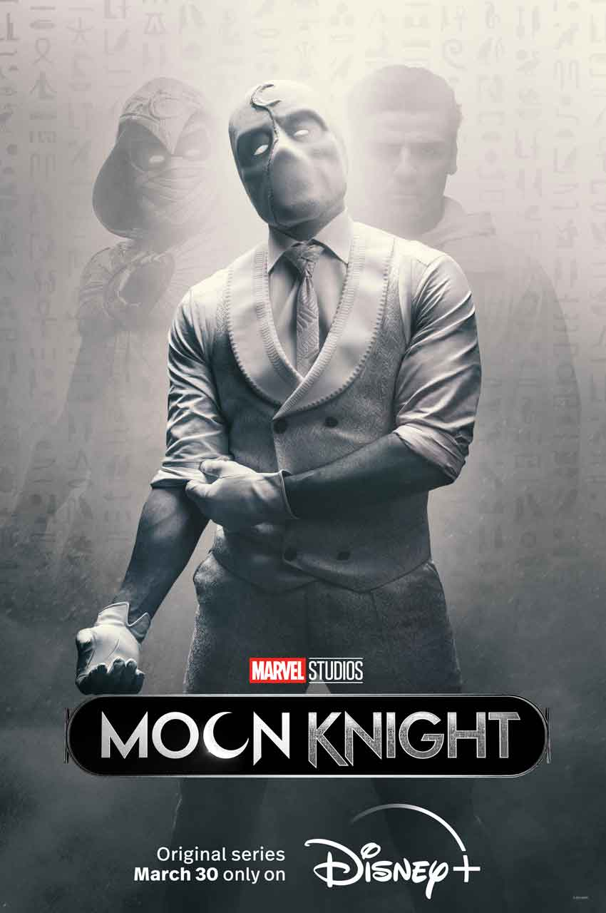
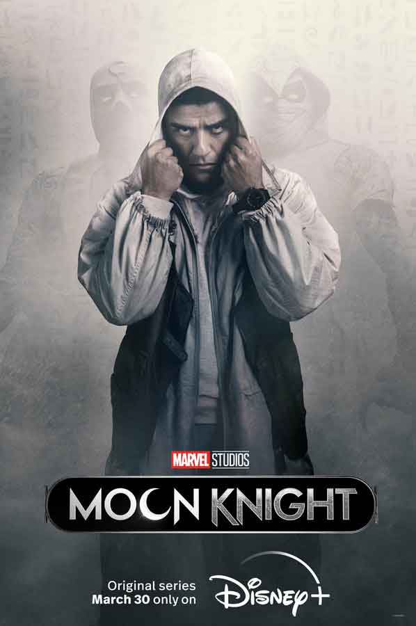
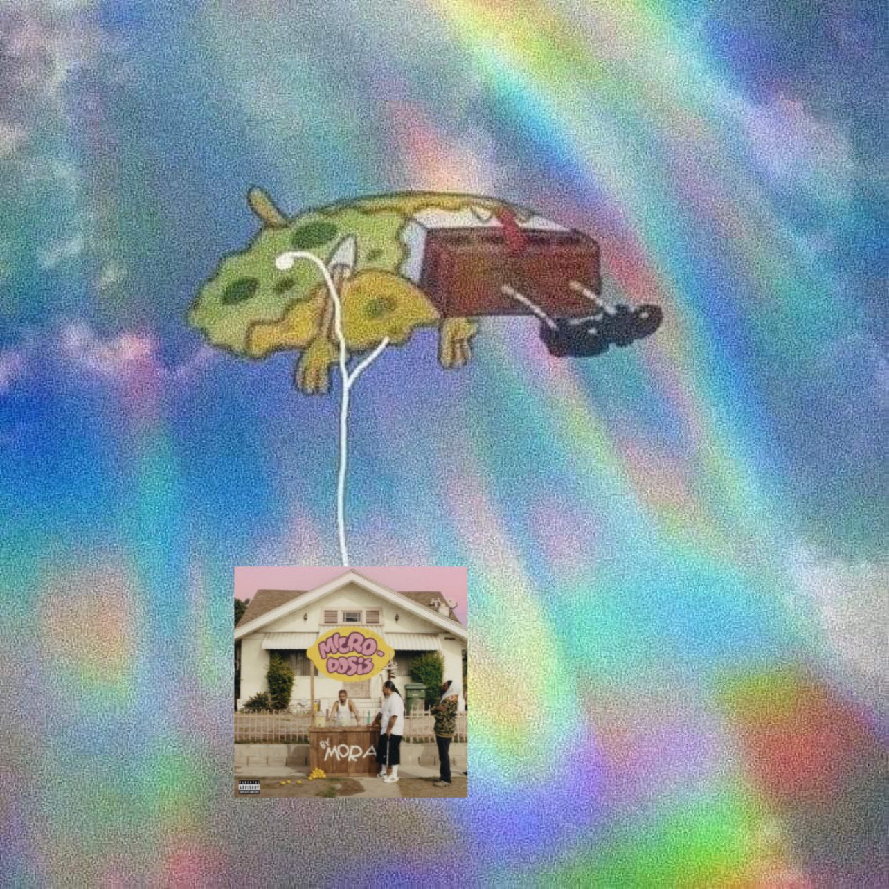

Pese a que aún no se conoce la sinopsis oficial de la película, sí sabemos algo: estará basada en la serie de cómics de 'The Mighty Thor' creada por Jason Aaron y Russell Dauterman. En esta serie de cómics, descubrimos que Jane Foster, el interés amoroso de Thor, tiene cáncer, y la única forma de curarse es a través del martillo de Thor, conocido como mjölnir. Así, Jane Foster se convierte en la Diosa del Trueno y sustituye a Thor ya que esté deja de ser considerado digno de seguir portando el martillo. El propio director, Taika Waititi, ha confirmado que está tomando la inspiración de esa serie de cómics para su película.


Lo que no sabemos es dónde estará Thor en ese momento. Al final de 'Vengadores: Endgame', Thor se une a los Guardianes de la Galaxia, por lo que todo es posible, incluso que su participación en la película sea con un papel más secundario.
Marc Spector termina tomando el control del cuerpo de Steven. ¿Qué pasará en el capítulo 3 de Moon Knight?
Nuevo capitulo de Moon knight y te contamos todo lo que trajo
El tercer capítulo de Moon Knight es un viaje a Egipto donde descubrimos más de Khonshu, los planes del Dr. Harrow y la conexión de Marc Spector con Moon Knight.
Al final del segundo capítulo de Moon Knight, Arthur Harrow le revela a Steven (pensando que no podría hacer nada al respecto) sus planes para resucitar a Ammit y llevar su “justicia” a la Tierra. Por suerte Layla aparece para salvarlo de los seguidores del culto de harrow, pero el villano logra obtener el escarabajo dorado y con eso tiene lo que necesita para traer de vuelta a la diosa.
Esto lleva a Marc a reunirse con Layla y viajar a Egipto para intentar detener los planes malvados del personaje de Ethan Hawke, y eso nos permite conocer más sobre los misteriosos dioses que están detrás de todo lo que está sucediendo ahora, y lo que podría pasar si Ammit logra su cometido.
Khonshu es atrapado



Aqui te dejamos una pequeña sinopsis de los anteriores capitulos
Capitulos 2
El segundo episodio, de casi 50 minutos de duración, presentó a la esposa de Marc, sus conexiones con el dios Jonsu y parte de cuál será la próxima misión de Moon Knight que lo transportó a Egipto.
Los límites entre el bien y el mal continúan confundiéndose en la atormentada mente del asustadizo protagonista Steven Grant (Oscar Isaac) mientras descubre nuevas pistas sobre las actividades y características de su otra identidad, el temerario y brutal Marc Spector, quien insiste en que Steven debe cederle el control del cuerpo para que él pueda salvar a ambos y completar su misión
El episodio revela además por completo a Layla El-Faouly (May Calamawy), quien hasta entonces solo era una voz en el teléfono para Steven. Layla aparece en el momento en que más la necesita, aunque solo para complicar todavía más las cosas debido a su cercana relación personal.
Para completar su misión a favor de Ammit, Harrow necesita encontrar el escarabajo dorado que está en poder de Grant y usará cualquier estrategia para tenerlo en su poder, pero Steven se rehúsa a volver a entregarle el poder de su cuerpo a Marc para que luche por ellos.
Capitulo 1
El primer capítulo de Moon Knight pone en contexto al espectador. Steven Grant es un hombre que intenta llevar una vida tranquila y rutinaria, trabajando en un museo como vendedor de souvenirs; sin embargo padece un transtorno del sueño que le cambiará la vida. Steven no puede "notar la diferencia entre la vida y los sueños".
Apasionado de la cultura egipcia, Grant "despierta" en lugares lejanos a su hogar, en una especie de realidad paralela en la que pone en riesgo su vida y sigue las órdenes de una voz dentro de su cabeza.
Sus sueños y la realidad comienzan a mezclarse, dejándole pistas que tendrá que descifrar para saber qué ocurre en su vida. Una de estas pistas llega en una llamada, donde del otro lado de la línea le dicen "Marc".
"Hay caos dentro de ti", le advierte Arthur Harrow antes del clímax del primer episodio. El enfrentamiento con el caso interno y la adquisición de poderes que dan inicio a Moon Knight.
Ahora nos toca meternos en la musica
¡Lo nuevo en el reguetón! Mora estrena su nuevo disco 'Micro-Dosis' y está increíble
"Microdosis", que cuenta con 15 canciones e igual número de videos musicales, incluye además una colaboración con la artista latina Elena Rose y Feid, detallaron los representantes de Mora en un comunicado de prensa. La producción de este álbum fue trabajada, además de Mora, por Subelo Neo, Taiko, Foreign Teck y Smash David. Gabriel Mora Quintero, nombre verdadero de Mora, de 25 años, participa actualmente de la gira estadounidense de Bad Bunny, "World's Hottest Tour".
Además, "Microdosis" es el segundo disco de Mora, después de lanzar en 2021 su primer álbum, "Primer día de clases", que hasta hoy suma más de 850 millones de reproducciones entre las diferentes plataformas digitales. Ese primer álbum fue certificado también como Platino del álbum por la Asociación de la Industria de la Grabación por la venta de más de 1 millón de copias en Estados Unidos
Las reacciones en redes sociales no se hicieron esperar y diferentes usuarios han mostrado su aceptación a este nuevo álbum con algunos memes.

Contacto
Si queres reciber novedades de Musica,Ropa, etc. llena el formulario